Flatmap tracing review
Source image, saved anatomical outlines and scale endpoints. Unfinished fields are NA.
fig02_opossum — illustrative summary; not an independent animal
Provisional digitization; inspect anatomical boundaries.
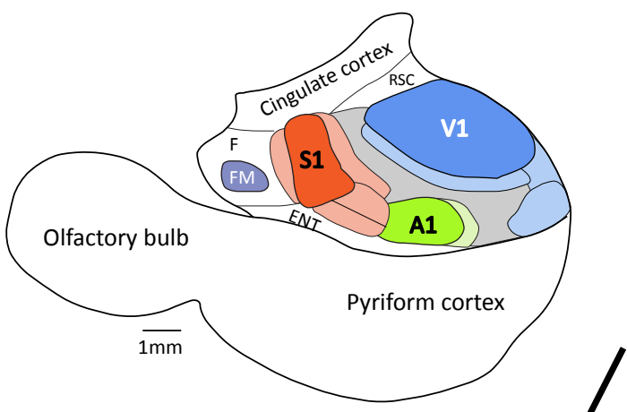

ImageJ ROIs · Calibrated TIFF
| Field | mm² | % neocortex | Status |
|---|
| S1 | 2.436 | NA | provisional; anatomical review required |
| V1 | 6.916 | NA | provisional; anatomical review required |
| A1 | 1.857 | NA | provisional; anatomical review required |
| FM | 0.655 | NA | provisional; anatomical review required |
| somatosensory_other | 0.682 | NA | provisional; anatomical review required |
| visual_other | 1.280 | NA | provisional; anatomical review required |
| multimodal | 3.156 | NA | provisional; anatomical review required |
| auditory_other | 0.338 | NA | provisional; anatomical review required |
| cingulate; RSC; F; ENT | NA | NA | not_measurable |
fig04_blind_mole_rat — illustrative summary; not an independent animal
Provisional digitization; inspect anatomical boundaries.
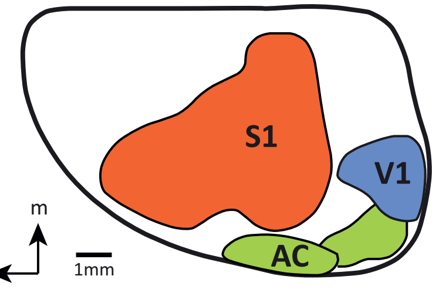

ImageJ ROIs · Calibrated TIFF
| Field | mm² | % neocortex | Status |
|---|
| S1 | 22.807 | NA | provisional; anatomical review required |
| V1 | 3.862 | NA | provisional; anatomical review required |
| AC | 2.409 | NA | provisional; anatomical review required |
| auditory_extension | 2.154 | NA | provisional; anatomical review required |
fig08C_bat — illustrative summary; not an independent animal
Provisional digitization; inspect anatomical boundaries.
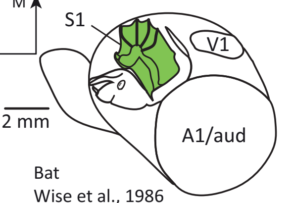

ImageJ ROIs · Calibrated TIFF
| Field | mm² | % neocortex | Status |
|---|
| S1_forelimb | 4.623 | NA | provisional; anatomical review required |
| V1 | 1.640 | NA | provisional; anatomical review required |
| A1/aud | 23.322 | NA | provisional; anatomical review required |
| S1 | NA | NA | not_measurable |
fig08C_mouse — illustrative summary; not an independent animal
Provisional digitization; inspect anatomical boundaries.
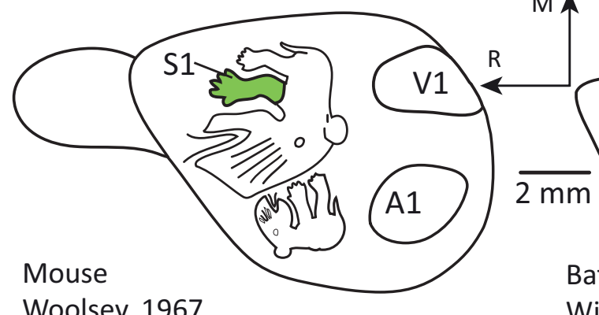

ImageJ ROIs · Calibrated TIFF
| Field | mm² | % neocortex | Status |
|---|
| S1_forelimb | 0.970 | NA | provisional; anatomical review required |
| V1 | 4.007 | NA | provisional; anatomical review required |
| A1 | 4.292 | NA | provisional; anatomical review required |
| S1 | NA | NA | not_measurable |
fig09A_enucleated_opossum — illustrative summary; not an independent animal
Provisional digitization; inspect anatomical boundaries.
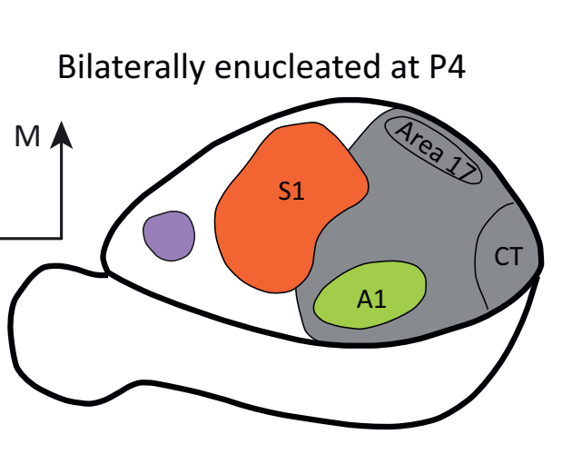

ImageJ ROIs · Calibrated TIFF
| Field | mm² | % neocortex | Status |
|---|
| S1 | 6.208 | NA | provisional; anatomical review required |
| area17 | 0.873 | NA | provisional; anatomical review required |
| A1 | 2.026 | NA | provisional; anatomical review required |
| CT | 1.627 | NA | provisional; anatomical review required |
| FM | 0.689 | NA | provisional; anatomical review required |
| auditory_somatosensory_domain | 14.206 | NA | provisional; anatomical review required |
fig09A_normal_opossum — illustrative summary; not an independent animal
Provisional digitization; inspect anatomical boundaries.
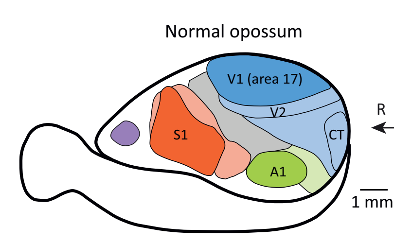

ImageJ ROIs · Calibrated TIFF
| Field | mm² | % neocortex | Status |
|---|
| S1 | 4.919 | NA | provisional; anatomical review required |
| V1 | 5.883 | NA | provisional; anatomical review required |
| V2 | 1.619 | NA | provisional; anatomical review required |
| visual_other | 3.129 | NA | provisional; anatomical review required |
| CT | 1.133 | NA | provisional; anatomical review required |
| A1 | 2.212 | NA | provisional; anatomical review required |
| auditory_other | 1.090 | NA | provisional; anatomical review required |
| somatosensory_other | 2.044 | NA | provisional; anatomical review required |
| FM | 0.621 | NA | provisional; anatomical review required |
| multimodal | 3.001 | NA | provisional; anatomical review required |
All-figure source assessment
Six illustrative views cover figures 2, 4, 8C and 9A. Printed scale bars are used independently of other publications. Figure 8C is the ghost bat Macroderma gigas and mouse comparison; A/B are developmental/body-morphology images. Combined multimodal envelopes overlap their explicitly named subregions and must not be summed. These published summaries are not newly identified animals.
Source-toggle precision review · Field inventory
Figure 1 — assessed_excluded
Conceptual phenotype/development diagram, not a cortical map.
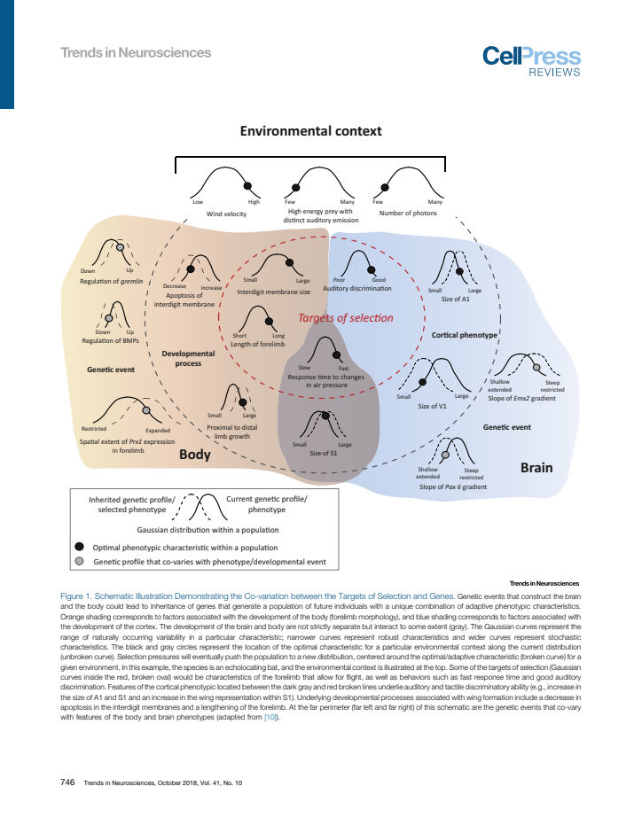
Figure 2 — digitized_provisional
1 measured view(s), 8 field/component observations; 0 boundaries remain NA for anatomical review. Illustrative, partial, repeated and unscaled restrictions apply.
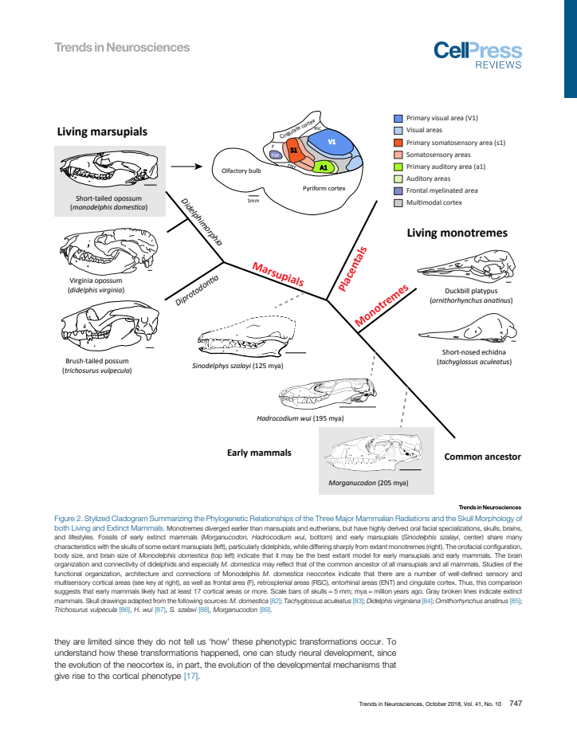
Figure 3 — assessed_excluded
Phylogeny with folded brain silhouettes; hidden sulcal tissue and projection prevent planar field-area measurement.
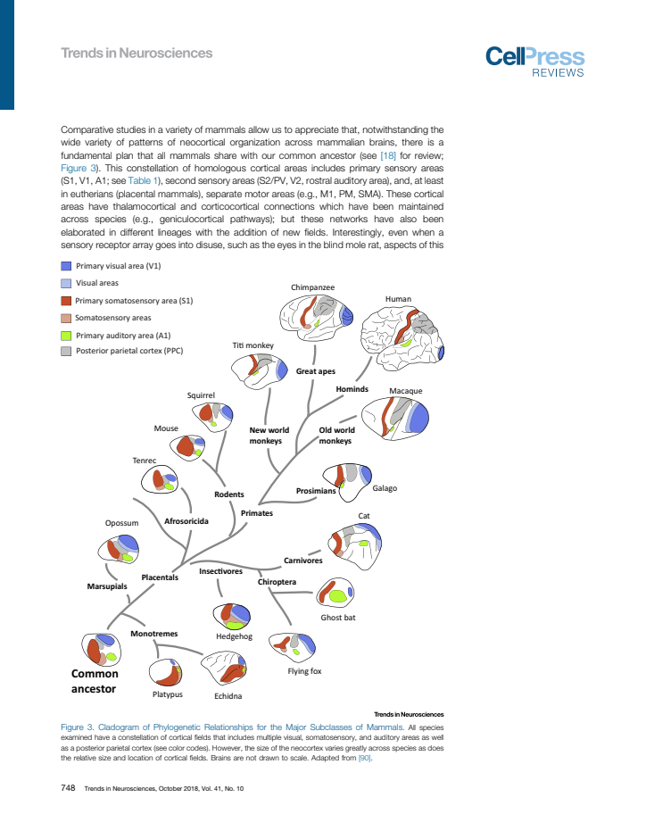
Figure 4 — digitized_provisional
1 measured view(s), 4 field/component observations; 0 boundaries remain NA for anatomical review. Illustrative, partial, repeated and unscaled restrictions apply.
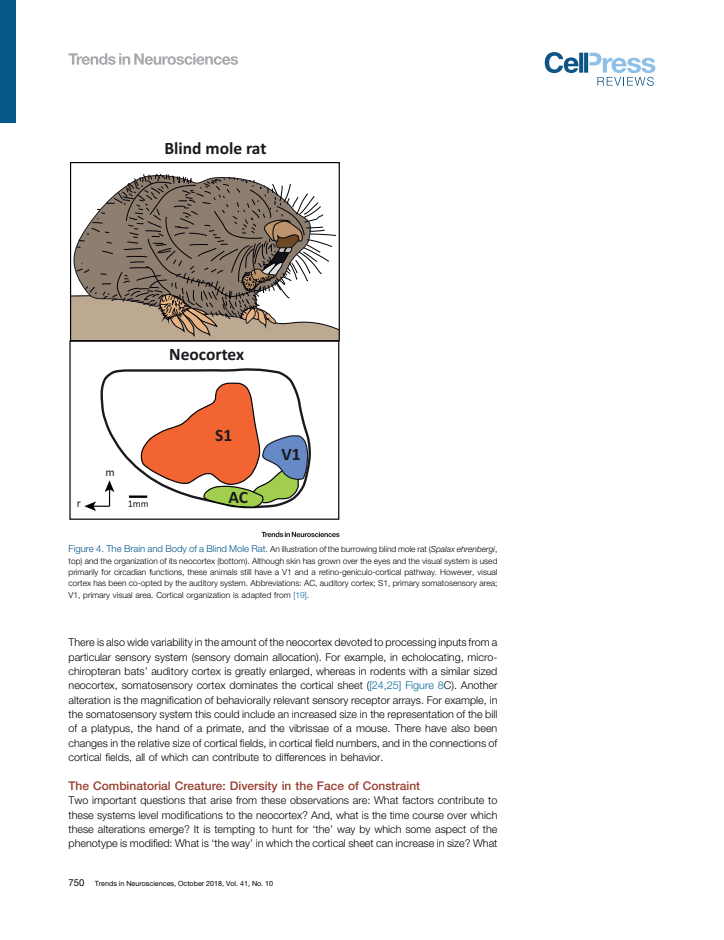
Figure 5 — assessed_excluded
Rectangular schematic models of evolutionary changes, not anatomical field envelopes.
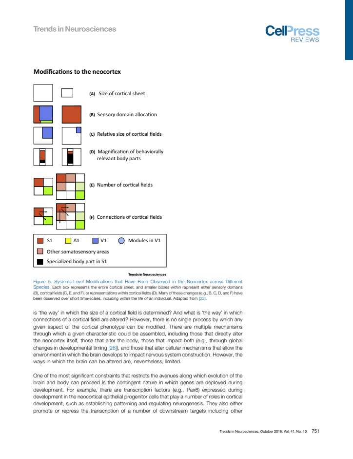
Figure 6 — assessed_excluded
Conceptual gene-expression and thalamocortical diagrams, not specimen flatmaps.
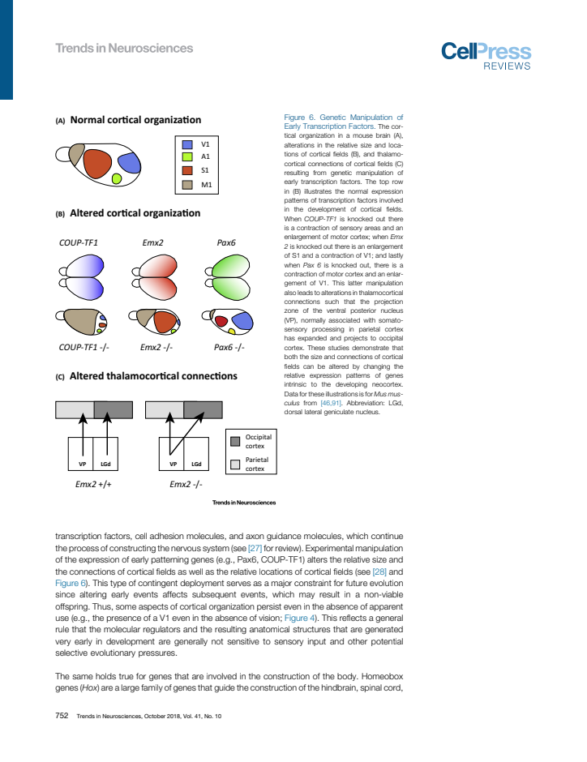
Figure 7 — assessed_excluded
Limb skeletons, not cortex.
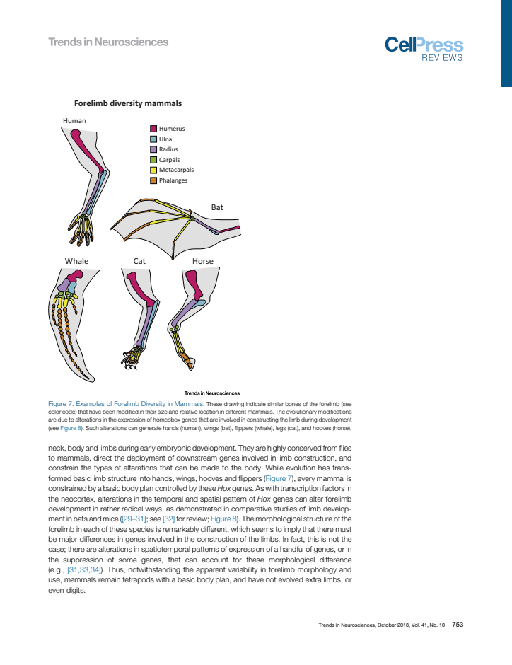
Figure 8 — digitized_provisional
2 measured view(s), 6 field/component observations; 0 boundaries remain NA for anatomical review. Illustrative, partial, repeated and unscaled restrictions apply. Panel C cortical maps are measured; A/B show developmental/body morphology, not cortical field surfaces.
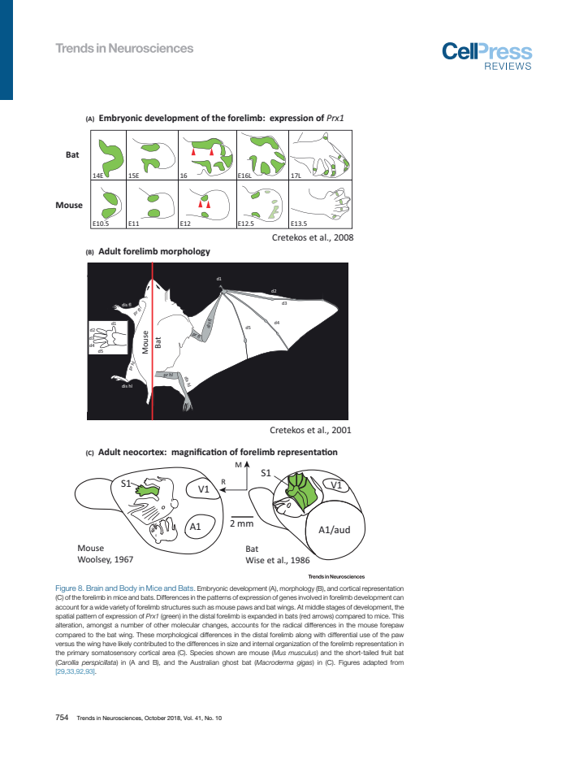
Figure 9 — digitized_provisional
2 measured view(s), 16 field/component observations; 0 boundaries remain NA for anatomical review. Illustrative, partial, repeated and unscaled restrictions apply. Panel A cortical maps are measured; B shows connectivity rather than another independent field-area observation.
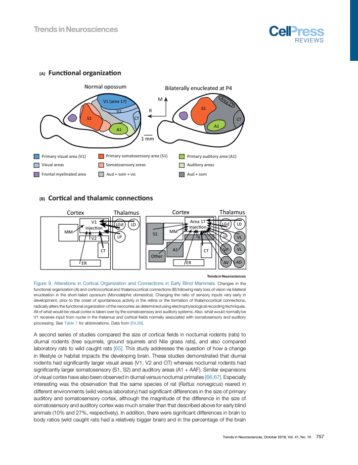
Figure 10 — assessed_excluded
Phylogenetic/behavioral timeline, not cortical geometry.
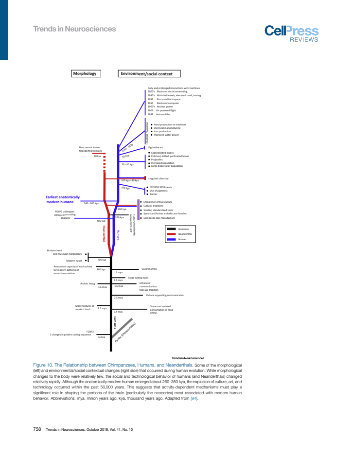